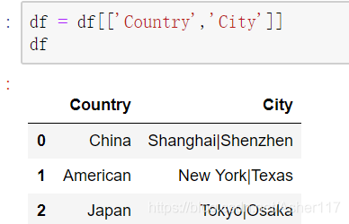

转载自 https://blog.csdn.net/Asher117/article/details/84346073
# 摘要
在进行数据分析时，我们经常需要把 DataFrame 的一列拆成多列或者根据某列把一行拆成多行，这篇文章主要讲解这两个目标的实现。
读取数据
# 一列分多列
将 City 列转成多列（以 | 为分隔符）, 这里使用匿名函数 lambda 来将 City 列拆成两列。
# 一行分多行
将 DataFrame 一行拆成多行（以 | 为分隔符）
# 方法一
在刚刚得到的 DataFrame 基础上操作，如下图所以，可以明显看到我们按照 City 列将 DataFrame 拆成了多行。主要是先将 DataFrame 拆成多列，然后拆成多个 DataFrame 再使用 concat 组合。但是这种方法碰到 City 列切割不均匀的时候可能会麻烦一点，因此，这个时候你可以使用万能方法二。
# 方法二
这个方法的主要思想是，首先将 DataFrame 中需要拆分的列进行拆分，再使用 stack（）进行轴变换，然后通过 index 来 join 即可，如下所示。
首先，将刚刚的 df 还原成原始形式：

接下来取出其 City 列，并切分成多列之后轴转换，之后重新设置索引，并且重命名为 Company
最后删除 df 里面的 Country 列，并将 DataFrame-df1 使用 join 到 df 里面得到最后的结果。
# 正则提取某列的要素并按要素分列
有个 csv 表格（以逗号 , 作为分隔符），数据样本如下，其中 电话号码 列中电话号码的个数不确定：
| 姓名 | 性别 | 电话号码 |
|---|---|---|
| 张三 | 男 | 电话号码：13788881111;+86-18911112222; 其码：86-17722221111; 其号码:+86 13565459999;86 15366558877 |
| 王五 | 女 | 16535468764;+77-16888779512;+86 13565457898; 其他 + 87-13544569871 |
使用 pandas 库结合正则表达式将第三列中的手机号码提取后每个号码单独成列，与原来的数据一起形成新的行。
预期结果：
| 姓名 | 性别 | 电话号码 | (0, 0) | (0, 1) | (0, 2) | (0, 3) | (0, 4) |
|---|---|---|---|---|---|---|---|
| 张三 | 男 | 电话号码：13788881111;+86-18911112222; 其码：86-17722221111; 其号码:+86 13565459999;86 15366558877 | 13788881111 | 18911112222 | 17722221111 | 13565459999 | 15366558877 |
| 王五 | 女 | 16535468764;+77-16888779512;+86 13565457898; 其他 + 87-13544569871 | 16535468764 | 16888779512 | 13565457898 | 13544569871 |
# 实现代码一
import pandas as pd | |
df = pd.read_csv('data.csv') | |
# 使用简单的正则表达式提取所有的手机号码 | |
phones = df[df.columns[2]].str.extractall(r'([1][345678][0-9]{9})') | |
# 将提取出的 Series 展开为多列 | |
phones = phones.unstack() | |
# 将原 df 和 phones 拼接 | |
df = pd.concat([df, phones], axis=1) | |
df.to_excel("abc.xlsx",index=False) |
# 实现代码二
import pandas as pd | |
df = pd.read_csv('data.csv') | |
def find_phone_number(text): | |
ph_no = re.findall(r"[1][345678][0-9]{9}",text) | |
return pd.Series(ph_no) | |
df_phones=df[df.columns[2]].apply(lambda x: find_phone_number(x)) | |
# 将原 df 和 phones 拼接 | |
df = pd.concat([df, df_phones], axis=1) | |
df.to_excel("abc2.xlsx",index=False) |
# 其他正则表达式
卡号：
[4][6][0][0-9]\{12\}
机身：
[0-9]\{14\}\|[0-9]\{15\}
提取 [] 内字符
(?<=\[)[^\[\]]*(?=\])
# 实现 vlookup 功能
df1 = pd.DataFrame({ | |
'Name': ['John', 'Jane', 'Jack'], | |
'Age': [30, 25, 50], | |
'Address': ['New York', 'London', 'Sydney'] | |
}) | |
print(df1) | |
df2 = pd.DataFrame({ | |
'Name': ['John', 'Ja1ck', 'Jane'], | |
'Phone': ['1234567890', '0987654321', '0123456789'] | |
}) | |
print('-'*100) | |
print(df2) |
输出：
Name Age Address | |
0 John 30 New York | |
1 Jane 25 London | |
2 Jack 50 Sydney | |
---------------------------------------------------------------------------------------------------- | |
Name Phone | |
0 John 1234567890 | |
1 Ja1ck 0987654321 | |
2 Jane 0123456789 |
result = df1.merge(df2, on='Name',how='left') # left：保留 df1 的所有行，right：保留 df2 的所有行 | |
print(result) |
输出:
Name Age Address Phone | |
0 John 30 New York 1234567890 | |
1 Jane 25 London 0123456789 | |
2 Jack 50 Sydney NaN |
# pandas 的 merge 知识扩展
在 pandas 的 .merge() 方法中， how 参数有几种 JOIN 方法:
- inner - 内连接。默认方法，只保留两个表共有的行。
- outer - 外连接。保留两个表所有行，无匹配的用 NaN 填充。
- left - 左连接。以左表为基准，保留左表所有行，右表无匹配的用 NaN 填充。
- right - 右连接。以右表为基准，保留右表所有行，左表无匹配的用 NaN 填充。
- cross - 笛卡尔乘积。每一个左表行与右表的每一行组合。
示例代码:
df1 = pd.DataFrame({ | |
'Name': ['John', 'Jane', 'Jack'], | |
'Age': [30, 25, 50] | |
}) | |
print('-'*50,"df1","-"*50,'\n',df1) | |
df2 = pd.DataFrame({ | |
'Name': ['John', 'Jack', 'Mike'], | |
'Address': ['New York', 'Sydney', 'London'] | |
}) | |
print('-'*50,"df2","-"*50,'\n',df2) | |
# inner join | |
result = df1.merge(df2, on='Name') | |
print('-'*50,"inner join","-"*50,'\n',result) | |
# outer join | |
result = df1.merge(df2, on='Name', how='outer') | |
print('-'*50,"outer join","-"*50,'\n',result) | |
# left join | |
result = df1.merge(df2, on='Name', how='left') | |
print('-'*50,"left join","-"*50,'\n',result) | |
# right join | |
result = df1.merge(df2,on='Name',how='right') | |
print('-'*50,"right join","-"*50,'\n',result) | |
# cross join | |
result = df1.merge(df2, how='cross') | |
print('-'*50,"cross join","-"*50,'\n',result) |
输出：
-------------------------------------------------- df1 -------------------------------------------------- | |
Name Age | |
0 John 30 | |
1 Jane 25 | |
2 Jack 50 | |
-------------------------------------------------- df2 -------------------------------------------------- | |
Name Address | |
0 John New York | |
1 Jack Sydney | |
2 Mike London | |
-------------------------------------------------- inner join -------------------------------------------------- | |
Name Age Address | |
0 John 30 New York | |
1 Jack 50 Sydney | |
-------------------------------------------------- outer join -------------------------------------------------- | |
Name Age Address | |
0 John 30.0 New York | |
1 Jane 25.0 NaN | |
2 Jack 50.0 Sydney | |
3 Mike NaN London | |
-------------------------------------------------- left join -------------------------------------------------- | |
Name Age Address | |
0 John 30 New York | |
1 Jane 25 NaN | |
2 Jack 50 Sydney | |
-------------------------------------------------- right join -------------------------------------------------- | |
Name Age Address | |
0 John 30.0 New York | |
1 Jack 50.0 Sydney | |
2 Mike NaN London | |
-------------------------------------------------- cross join -------------------------------------------------- | |
Name_x Age Name_y Address | |
0 John 30 John New York | |
1 John 30 Jack Sydney | |
2 John 30 Mike London | |
3 Jane 25 John New York | |
4 Jane 25 Jack Sydney | |
5 Jane 25 Mike London | |
6 Jack 50 John New York | |
7 Jack 50 Jack Sydney | |
8 Jack 50 Mike London |
# 多行合并一行
现有数据如下：
| 登录 IP | 用户 ID | 登录时间 | 操作记录 |
|---|---|---|---|
| 11.1.11.1 | 738322 | 2022/5/17 11:25 | ABC |
| 11.1.11.1 | 738322 | 2022/5/17 11:25 | DEF |
| 154.2.15.1 | 738765 | 2022/5/17 11:25 | 大大 |
| 11.1.11.3 | 738322 | 2022/5/17 11:25 | GHI |
使用 pandas 根据条件进行合并，条件是：登录 IP、用户 ID、登录时间三个字段的值都相同的情况下，将操作记录的值从上往下进行合并。
预期结果如下表：
| 登录 IP | 用户 ID | 登录时间 | 操作记录 |
|---|---|---|---|
| 11.1.11.1 | 738322 | 2022/5/17 11:25 | ABCDEF |
| 154.2.15.1 | 738765 | 2022/5/17 11:25 | 大大 |
| 11.1.11.3 | 738322 | 2022/5/17 11:25 | GHI |
实现代码：
import pandas as pd | |
data = { | |
'登录IP' : ['11.1.11.1', '11.1.11.1', '154.2.15.1', '11.1.11.3'], | |
'用户ID' : [738322, 738322, 738765, 738322], | |
'登录时间' : ['2022/5/17 11:25', '2022/5/17 11:25', '2022/5/17 11:25', '2022/5/17 11:25'], | |
'操作记录' : ['ABC', 'DEF', '大大', 'GHI'] | |
} | |
df = pd.DataFrame(data) | |
grouped = df.groupby(['登录IP', '用户ID', '登录时间']) | |
result = grouped['操作记录'].agg(lambda x: ''.join(x)) | |
print(result) |
代码解析：
- 使用
.groupby()按照三个字段进行分组 - 调用
.agg(), 传入lambda x: ''.join(x)对操作记录列进行字符串合并 - 最终实现了根据条件对指定列合并后的结果表
所以，掌握 .groupby () 和.agg()这两个方法，可以轻松实现根据条件对指定列 (特别是字符串列) 进行各种统计和处理。
在实际工作中，这两个方法可以应用到大量数据处理的场景中，是数据分析和挖掘中的重要工具，熟练运用可以大大提高工作效率和质量。
见：https://segmentfault.com/q/1010000041855612/a-1020000041855836?_ea=236896464
# QQ 群成员分析
数据样本如下
QQ群号 群成员 | |
群聊1 9758430 | |
群聊1 4559318 | |
群聊1 6962205 | |
群聊1 4613618 | |
群聊1 5734685 | |
群聊1 6141414 | |
群聊1 323030 | |
群聊1 2344021 | |
群聊1 7121977 | |
群聊1 5081996 | |
群聊1 8926421 | |
群聊1 6745628 | |
群聊1 3863137 | |
群聊2 7676445 | |
群聊2 6089608 | |
群聊2 2995915 | |
群聊2 482082 | |
群聊2 531802 | |
群聊2 4834330 | |
群聊2 7692453 | |
群聊2 2258744 | |
群聊2 1026183 | |
群聊2 225674 | |
群聊2 7121977 | |
群聊2 9926942 | |
群聊2 5222292 | |
群聊2 7436960 | |
群聊2 8227345 | |
群聊2 6992045 | |
群聊2 8742475 | |
群聊3 24016256 | |
群聊3 90206526 | |
群聊3 48341462 | |
群聊3 24684071 | |
群聊3 29748179 | |
群聊3 6089608 | |
群聊3 41037056 | |
群聊3 90788423 | |
群聊4 437351868 | |
群聊4 207182601 | |
群聊4 32875139 | |
群聊4 371786257 | |
群聊4 314738440 | |
群聊4 469359518 | |
群聊4 915810745 | |
群聊4 593472861 | |
群聊4 4613618 | |
群聊4 90788423 | |
群聊4 365482277 | |
群聊4 656786903 | |
群聊4 826146966 |
将重复出现在多个群的成员 number 及其所在群展示出来。
import pandas as pd | |
df = pd.read_excel("QQ.xlsx") | |
# 找出出现在多个群的成员 | |
duplicate_members = df.groupby('群成员').count().sort_values('QQ群号', ascending=False).loc[df.groupby('群成员').count()['QQ群号'] > 1,:] | |
# 展示重复出现的成员及所在的群 | |
for member, groups in duplicate_members.iterrows(): | |
print(f'成员{member}在以下群出现: ', end='') | |
group_list = df.loc[df['群成员'] == member, 'QQ群号'].unique() | |
print(*group_list, sep=', ') |
输出
成员90788423在以下群出现: 群聊3, 群聊4 | |
成员7121977在以下群出现: 群聊1, 群聊2 | |
成员4613618在以下群出现: 群聊1, 群聊4 | |
成员6089608在以下群出现: 群聊2, 群聊3 |
# 找出只出现在一个群的成员
single_group_members = df[~df['群成员'].isin(duplicate_members.index)] | |
print('只出现在一个群的成员:') | |
for member in single_group_members['群成员'].unique(): | |
print(member) |
输出
只出现在一个群的成员: | |
9758430 | |
4559318 | |
6962205 | |
5734685 | |
6141414 |
# 给定另一个群成员 number 列表，查找其是否在前面的群成员列表中
import pandas as pd | |
df = pd.DataFrame({ | |
"name": ["John", "Alice", "Bob", "Jane"], | |
"target": [1, 2, 3, 4] | |
}) | |
readytocompare = [1, 2, 5] | |
isin_series = df[df["target"].isin(readytocompare)] | |
isin_series |
输出：
name target | |
0 John 1 | |
1 Alice 2 |
# 关系可视化
import pandas as pd | |
from pyecharts import options as opts | |
from pyecharts.charts import Graph | |
from pyecharts.commons.utils import JsCode | |
# 读取表格数据 | |
df = pd.read_excel("QQ.xlsx") | |
# 创建节点和边的列表 | |
nodes = [] | |
links = [] | |
for group in df['QQ群号'].unique(): | |
nodes.append({"name": group, "symbolSize": 50}) | |
members = set(df[df['QQ群号']==group]['群成员']) | |
for other_group in df[df['QQ群号']!=group]['QQ群号'].unique(): | |
other_members = set(df[df['QQ群号']==other_group]['群成员']) | |
common_members = members & other_members | |
if common_members: | |
links.append({ | |
"source": group, | |
"target": other_group, | |
"value": len(common_members), | |
"common_members": list(common_members) | |
}) | |
# 绘制关系图 | |
graph = ( | |
Graph() | |
.add( | |
"", | |
nodes, | |
links, | |
repulsion=8000, | |
edge_label=opts.LabelOpts( | |
position="middle", formatter=JsCode("function (params) {return params.data.common_members.join('<br/>')}"), font_size=10 | |
), | |
label_opts=opts.LabelOpts(is_show=False), | |
) | |
.set_global_opts( | |
title_opts=opts.TitleOpts(title="Group Relations"), | |
tooltip_opts=opts.TooltipOpts( | |
formatter=JsCode( | |
"function (params) {return 'Group: ' + params.data.name + '<br/>Members: ' + params.data.value.join('<br/>')}" | |
) | |
), | |
) | |
) | |
graph.render("group_relations.html") |
import pandas as pd | |
from pyecharts import options as opts | |
from pyecharts.charts import Graph | |
# 读取表格数据 | |
df = pd.read_excel("QQ.xlsx") | |
# 创建节点和边的列表 | |
nodes = [] | |
links = [] | |
for group in df['QQ群号'].unique(): | |
nodes.append({"name": group, "symbolSize": 50}) | |
members = set(df[df['QQ群号']==group]['群成员']) | |
for other_group in df[df['QQ群号']!=group]['QQ群号'].unique(): | |
other_members = set(df[df['QQ群号']==other_group]['群成员']) | |
common_members = members & other_members | |
if common_members: | |
links.append({ | |
"source": group, | |
"target": other_group, | |
"value": len(common_members), | |
"common_members": list(common_members) | |
}) | |
# 绘制关系图 | |
graph = ( | |
Graph() | |
.add("", nodes, links, repulsion=8000, edge_label=opts.LabelOpts( | |
position="middle", formatter=f"{common_members}\n", font_size=10 | |
)) | |
.set_global_opts(title_opts=opts.TitleOpts(title="Group Relations")) | |
) | |
graph.render("group_relations.html") |